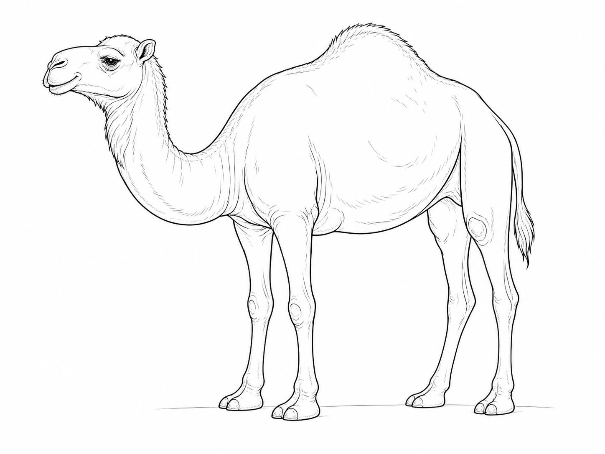

A camel’s hump stores fat, not water. That stored energy can help when food is scarce.
Find the Pattern · Camel study
Draw what makes it a camel.
Choose your path. Build a lifelike dromedary one useful shape at a time, ask for a hint only when you need one, then explain the clues you found.
About 8 minutes · paper + pencil

Original dromedary study · one humpPage 1 · Drawing studio
Build it from six landmarks.
Place paper gently over the screen. Trace only the highlighted lines, then move to the next landmark.
Page 2 · Look closely
Which details are strong evidence?
Select three features that help a scientist identify or understand this animal.
On your paper: circle your strongest clue and finish, “I recognise a dromedary because…”
Page 3 · Reason with evidence
What is the strongest explanation?
Say your own idea first. Then compare it with the three choices.
The strongest answer connects the foot’s shape to what it does on loose ground.
Page 4 · Science and tafakkur
Connect what you saw.
Use the drawing as evidence, then leave with a question of your own.
If an animal lived on icy rock instead of sand, which kind of foot might help it move safely? Explain why.
Qur’an reflection · 88:17
أَفَلَا يَنظُرُونَ إِلَى ٱلْإِبِلِ كَيْفَ خُلِقَتْ
“Do they not look at the camel—how it was created?”
Plain English meaningWhich useful detail makes you wonder most?On your paper: write or draw one question you would ask a camel scientist.
🐪
Camel study complete
You drew what you noticed.
Your page now holds lifelike landmarks, scientific evidence, a reason and a question worth carrying forward.